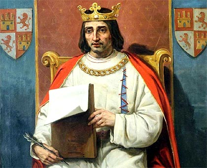
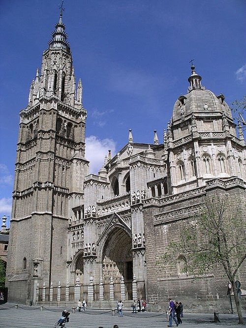
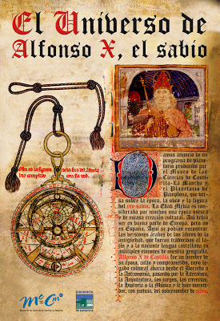
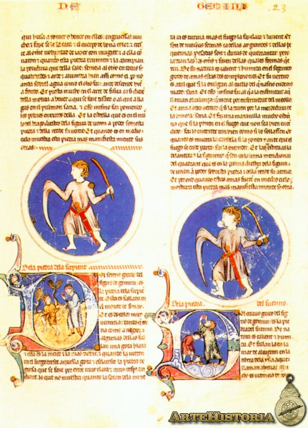

Alfonso X

Persona: Jaco Aharon
Fecha de nacimiento: 13 de Abril, 1215
Fecha de fallecimiento: 24 de Noviembre de 1300
Ocupación: Traductor de Toledo
Familia
Jaco Aharon nació el 13 de abril de 1215 en Toledo, España, y fallecióel 24 de noviembre de 1300. Fue criado en una casa de judíos sefardíes--su contacto con su religión y
patrimonio lo introdujeron al hebreo y el árabe. Al crecer en Toledo, también tuvo contacto con el castellano y el latín. Su padre era de Toledo y su madre era de descendencia
árabe mezclado con el norte de áfrica. Su proficiencias en ambos lenguas y su interés en las ciencias le ganaron su posición bajo Alfonso X. Alfonso X dio empleo a Aharon en 1255, cuando
le asignóa trabajar con otros profesionales en la Escuela de Traductores de Toledo. Aharon trabajaba en la estandarización y codificación del idioma por el bien del gobierno, la comunicación,
la gramática y el vocabulario. También pretendía erradicar el uso del latín. Trabajaba con obras literarias -- tradujo el trabajo de poetas griegos o bizantinos al castellano, y también los
avances científicos de los árabes en forma de lapidarios, bestiarios, y trabajos en astronomía e historia. A causa del trabajo de traductores como Aharon, Castilla fue uno de los primeros
estados europeos que utilizaba una lengua vernácula en la forma de prosa castellana.
Papel Histórico
Jaco Aharon era un traductor en la Escuela de Traductores de Toledo durante el tiempo de Alfonso X. Sus áreas de interés eran las ciencias físicas, el judaísmo, la astrología, y la
traducción de poemas griegos y bizantinos. Las metas de este trabajo eran estandarizar el castellano para el gobierno, facilitar la comunicación, la gramática, y el vocabulario del tiempo.
Palabras
Características del Castellano Derecho
(Capítulo 8)
Las discrepancias en los dialectos diferentes se resolvieron a través del castellano derecho. El aumento de la uniformidad de la lengua ayudóa que la época ganara más obras de literatura para ser entendida por más gente
- Con la amplificación de las traducciones y las ciencias, salióla necesidad de crear términos técnicos que no existían en castellano. (
septentrión,
horizón,
etc.)
- Incorporación de palabras latinas, que fueron reconocibles por los hablantes de dialectos
- Incorporación de palabras griegas o latinas con definiciones castellanos
- La creación de palabras por analogía --para simplificar la lengua
luengo? longueza
La lengua escrita influyóla lengua hablada y viceversa. Alfonso X deseaba preservar el dialecto de Toledo, pero también quería eliminar la confusión que existía en los sonidos diferentes de los dialectos.
Para eliminar confusión, se iniciaban nuevas gráficas
-
ç
(cedilla, zedilla); (braço,
coraçón
),
ñ
, ll
, ch.
- Castellano derecho empezóel uso de
ado
en las escrituras
- Castellano derecho también establecióel uso de los pronombres
nosotros
y vosotros
Palabras de otras idiomas durante el tiempo de Alfonso X:
Préstamos del latín y del griego:
- Absolución, abstinencia, adorar, caridad, acento, accidental, alegoría, metafísica, ciencia, verbo, versificar, acusación, adúltero, adversario, beneficio, elección, justicia, negligente, notario, etc.
Préstamos del francés:
- Deán, dardo, dama, danzar, joya, canela, vianda, etc.
Préstamos del occitano:
- Laurel, prez, esgrimir, capitel, hereje, hostal, etc.
Viaje
Antes de la presencia de la Escuela de Traductores de Toledo durante el
tiempo de Alfonso, la historia de Toledo y sus contactos con otras partes de Europa no era
tan documentada. Jaco Aharon fue un erudito que trabajójunto con otros traductores para
traducir obras de filosofía y ciencia del árabe clásico. Antes del siglo 13, los traductores
convirtieron las obras árabes al latín, la lengua final. Sin embargo, en el reino de Alfonso X,
Jaco y sus compañeros tradujeron las obras al castellano, resultando en el comienzo de la
estabilización del español moderno. Por la diversidad de su recursos tanto en los idiomas como
en otros áreas de estudio, Toledo atraía a muchos científicos y filósofos interesados en la
cultura rica que existía. Con la facilidad de acceso a obras de astronomía, astrología, medicina,
y muchos otras enciclopedias y libros (debido a su trabajo), sus oportunidades de seguir
estudiando aumentaron de gran manera.
Política
La Reconquista agarró fuerza después de la conquista de Toledo en 1085, y durante este tiempo, el castellano se utilizaba como la lengua aceptada. Toledo se convirtió en la capital política y cultural del reino de Castilla, y el dialecto de Toledo fue aceptado como el estándar. Alfonso X tomó el trono de Castilla y Léon en 1252, después de la muerte de su padre, Ferdando III. El idioma castellano se extendió durante este tiempo a través de las peregrinaciones religiosas y el movimiento de los militares. Él trató de conquistar los territorios de los moros, y experimentó la rebelión de las familias nobles, incluyendo la suya. Es conocido como el fundador de la lengua castellana.El comercio interior y un sistema fiscal avanzado también favorecieron la adopción del castellano toledano. Alfonso X creó una cultura de aceptación de las tres culturas prevalentes en la península --cristiana, árabe, y judía-- y de crecimiento de ideas científicas, que sin embargo podían ser era problemáticas para los cristianos, porque estaban en conflicto con sus creencias. El reino de Alfonso X estableció una codificación de la lengua y del castellano derecho
(Goetz, p. 111), lo cual reguló varios fenómenos morfosintácticos.
Alfonso X el Sabio
Fotografías



Audio
Extractos de Picatrix
, un libro Árabe escrito originalmente en el siglo XI
La teórica es el conocimiento de las posiciones de las estrellas fijas porque su materia es el emplazamiento de los arquetipos y de cómo proyectan sus rayos sobre este planeta y de los cuerpos de la esfera celeste para procurar la existencia de lo que se quiere; y bajo esto, de todo cuanto sustenta los principios como de las suenes y los talismanes; ten en cuenca que para quien hace suertes y talismanes; esto es cosa imprescindible
Hay gente que ha dicho que no e incluso ha opinado que el cielo no tiene actividad, que la actividad del éter en el mundo superior son los astros y la temperatura, y que las imaágenes de los grados mismos sólo son representaciones de las situaciones de los astros cuando se juntan. Y hay gente que ha dicho que las imágenes de los grados son el contenido de la astrologiía y la causa del ser de todos los seres